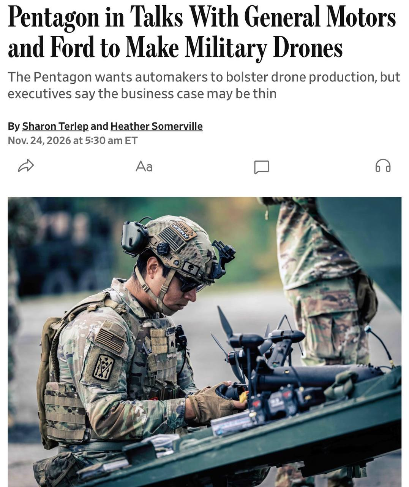

Топор Live
@toporlive
Топор Live
@toporlive
Пентагон ведёт переговоры с Ford и General Motors о массовом производстве военных беспилотников The Wall Street Journal.

⚡️Пентагон ведёт переговоры с Ford и General Motors о массовом производстве военных беспилотников, — The Wall Street Journal.
General Motors рассматривает возможность выпуска двигателей для БПЛА, а представители Минобороны США уже провели встречи с руководством Ford и других компаний.
Автоконцерны опасаются репутационных рисков, нестабильного спроса и неопределённости с финансированием. Соглашения пока не заключены.
General Motors рассматривает возможность выпуска двигателей для БПЛА, а представители Минобороны США уже провели встречи с руководством Ford и других компаний.
Автоконцерны опасаются репутационных рисков, нестабильного спроса и неопределённости с финансированием. Соглашения пока не заключены.